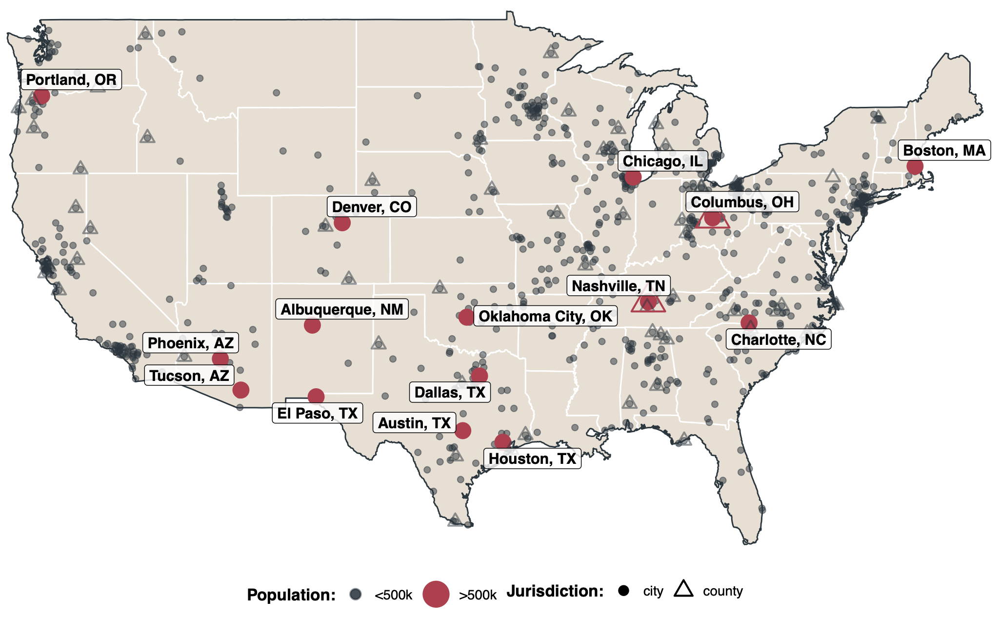
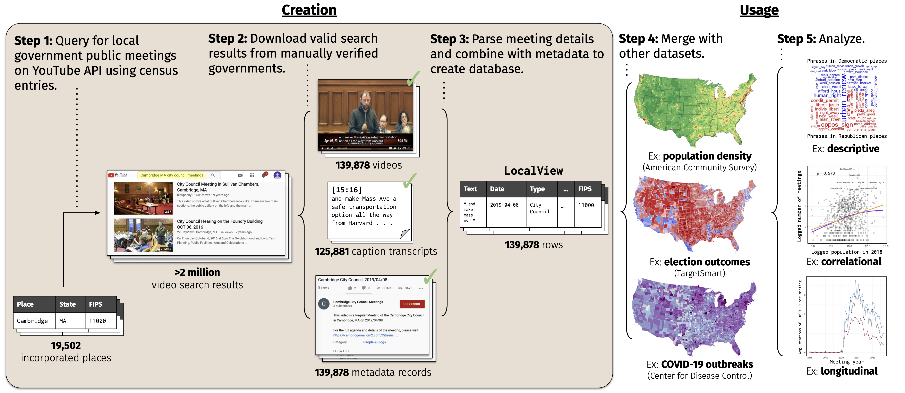

LocalView is a database co-created by Soubhik Barari and Tyler Simko to advance the study of local policy-making and politics in the United States. It is the largest existing dataset of local government public meetings — the central policymaking process in American local government.
At present, the database covers 139,616 videos of public meetings 1,012 places and 2,861 distinct governments across the United States between 2005-2022. The map below provides a summary of the geographic coverage in the sample.

LocalView is continuously collected, processed, and publicly for analysis through an automated pipeline described below.

For more information, contact